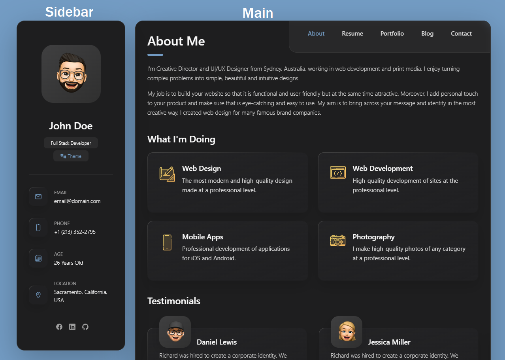

Created: 30/01/2023
By: Suleiman
Email: soleman630@gmail.com
Thank you for purchasing my theme. If you have any questions that are beyond the scope of this help file, please feel free to email via my user page contact form here. Thanks so much!
iCard/ ├── assets/ │ ├── css/ │ ├── fonts/ │ ├── images/ │ └── js/ └── index.html
The file structure for "iCard" consists of a main folder, which holds all the necessary files for the website. Inside the "iCard" folder, there is an "assets" folder, which acts as a container for all the assets used in the website such as stylesheets, fonts files, images, and JavaScript files.
The "assets" folder is divided into four sub-folders, each one dedicated to a specific type of asset.
In addition to the "assets" folder, the "iCard" folder also contains an "index.html" file. This file acts as the main entry point for the website and serves as the starting point for the web browser when loading the website. The "index.html" file references the stylesheets, fonts files, images, and JavaScript files stored in the "assets" folder, which are necessary to display the content and functionality of the
The template is divided into three different parts.
This theme imports three Javascript files.
[some Javascript goes here...along with an general explanation] [some Javascript goes here...along with an general explanation] [some Javascript goes here...along with an general explanation]
[some Javascript goes here...along with an general explanation]
I've included three psds with this theme:
If you'd like to change the main image in the header, open "header.psd", make the necessary adjustments, and then save the file as "headerBG.png". Do the same for the buttons.
Include any more specific information about your psds.
I've used the following images, icons or other files as listed.
Once again, thank you so much for purchasing this theme. As I said at the beginning, I'd be glad to help you if you have any questions relating to this theme. No guarantees, but I'll do my best to assist. If you have a more general question relating to the themes on ThemeForest, you might consider visiting the forums and asking your question in the "Item Discussion" section.
Your Name